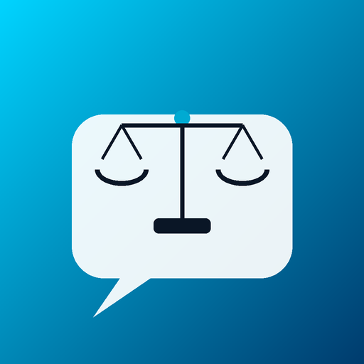

3 варианта анимации карточки "Чатбот для юридических услуг" — на выбор
Вариант A
AI Studio
Чатбот для юридических услуг
Сценарий + промпт + FAQ-база для Telegram-бота юридической компании
Весы Фемиды по-настоящему качаются (взвешивают) — балка с обеими чашами поворачивается как единое целое вокруг центрального пивота, ±4.5°. Тематически самый точный вариант.
Вариант B

AI Studio
Чатбот для юридических услуг
Сценарий + промпт + FAQ-база для Telegram-бота юридической компании
Сама иконка статична (нулевой риск искажений), вокруг неё пульсирует мягкое голубое свечение — по аналогии с искрами глаз у робота AI Studio. Самый безопасный и простой вариант технически.
Вариант C
AI Studio
Чатбот для юридических услуг
Сценарий + промпт + FAQ-база для Telegram-бота юридической компании
Иконка статична, а фон карточки живёт — медленные переливы синего и золотого (классика юридической тематики). По аналогии с морским фоном у карточки "Книги".